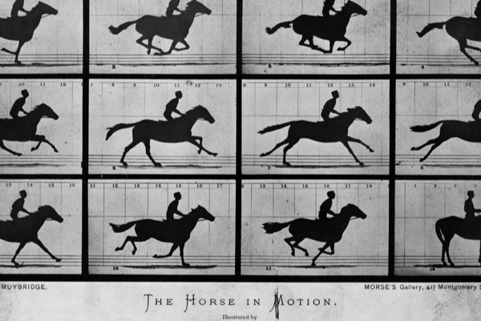
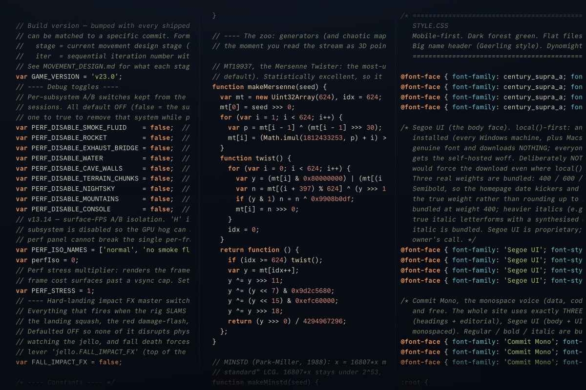

-

How Long Can You Live?
the hard wall at 120 is unproven, the world's oldest-age records are riddled with missing paperwork and pension fraud, and the thing that actually adds years is the one nobody calls a hack. sourced and illustrated, with four charts drawn from the data.
-

Photography's Greatest Hits
muybridge's flying horse, a mars selfie, an erased thumb, a galaxy you can drag: eleven dark rooms of photography's greatest pictures, every image free-licensed, every story sourced.
-

Big Enough
building muscle the natural way, on one supplement, real food, and sunlight, and knowing where to stop. the last 10% can cost twice the work, for muscle almost no one will notice.
-
Sure Things
eighteen things we measure to impossible precision, or rely on every day, and still cannot explain. we photographed a black hole and still can't say what gravity is.
-

How Old Are You in Space?
enter your birthday and see your age on every planet, counted in each world's own years, with a countdown to your next birthday on each.
-

The First Year
a calm, exhaustively sourced field guide to a baby's first year: feeding, sleep, health, development, safety, and the parent. every claim cited, every chart on real data, and the places the experts disagree shown honestly.
-

The Living Ocean
a mostly wordless dive through the ocean in three dozen high-resolution photographs, from tide pools and coral reefs to the deep sea, hydrothermal vents, and creatures named only last year.
-

The Brain Behind the Warehouse
behind every "your order has shipped" is a building you have probably never seen and a piece of software that knows where every item inside it is. how that software runs the warehouse and the factory beside it, from the dock door to the assembly line.
-

All In
the work that makes people valuable changed; the way we manage them mostly did not. a field guide to managing professionals, and to getting them all in.
-

Every Change This Website Ever Made
every commit to this site as a point of light on a three-year timeline. three near-silent years, then a 1,535-change spring eruption, fed by 13.3 billion tokens and counting.
-

Obi Juan Algorithm
a million points of math you fly through in 3D: strange attractors, fractals, the prime numbers, and the shadow of a four-dimensional shape.
-

The Optional Body
an interactive descent through the parts of the body you can live without, from a spare foot bone to a heart on a machine.
-

The Old Masters
a small private gallery. Storms and saints, harvest fields and harbour scenes.
-

The Ghost in the Swarm
100,000 particles obey three lines of math on the GPU, while an invisible field steers the swarm through sacred geometry.
-

Sluice
my own 2D mining game. This free v15.89 build is the last public version; development is now private, coming to Steam, Summer 2027.
-

Daylight Globe
a small WebGL globe for the day/night line, daylight hours, and sunrise/set.
-

Rendering Particles Without a Canvas
three physics demos with no canvas, no WebGL, no SVG. The whole renderer is one CSS property on a 1px div.